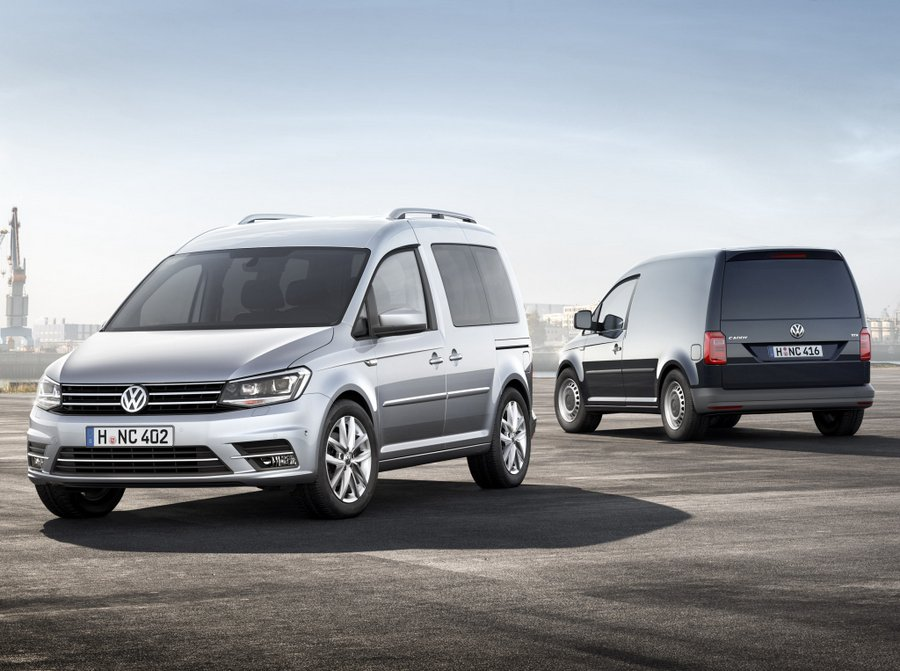

Ainda lidando com o escândalo dos motores a diesel, a Volkswagen conseguiu passar a Toyota e foi a montadora que mais vendeu no 1º semestre, com 5,1 milhões de veículos produzidos e entregues em todo o mundo. Foram cerca de 80 mil a mais do que a concorrente japonesa e 360 mil além da General Motors.
O famoso Fusca
Um projeto eterno, feito pra durar;o Fusca, feito a principio à pedido de Hitler a Ferdinand Porsche, o velho “beetle” foi nomeado Volkswagen, que como todos sabem, provem do idioma alemão e seu significado é Carro do Povo.
Depois foi nomeado Volkswagen Sedan, e partindo de um apelido nascido no Brasil,como FUSCA.

Conforto
A estabilidade da carroceria resulta não só em excelentes níveis de segurança, mas também em conforto aos passageiros, com melhor qualidade de acústica.Atingir níveis de conforto de veículos de classes superiores, em termos de acústica e vibração. O volkswagen utiliza um sistema de coxinização do tipo pendular.